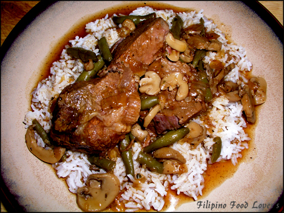
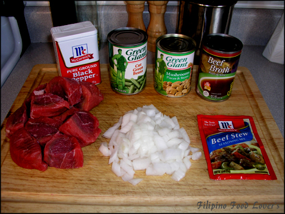
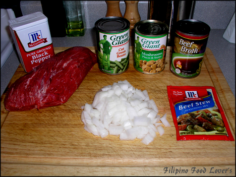
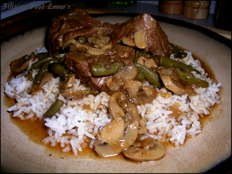
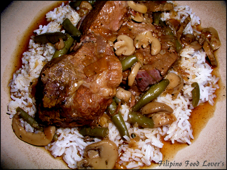

Beef & Mushroom Stew
This dish is inspired by the way of life here in the U.S. Most of us have busy schedules
and very little time to cook a quality meal for our family. Although this does take a
while to cook there is very little preparation time and you can basically throw
everything in a pot and let it cook while you do things around the house.

It is a perfect candidate for my wife and I to take to work for our lunch.
As you see in the picture nothing is rocket science here.
All the ingredients are in cans with the exception of one large onion.
Ingredients:
- 2 Lbs. lean Beef pot roast cut in 2 in. cubes
- 1 Can of cut green beans
- 1 Can of mushrooms
- 1 Large onion diced
- 5 Cans of beef broth
- 1 Packet of beef stew mix (McCornick)
- ½ Cup of water
- Salt & Pepper to taste
Cooking Direction:
- In a large casserole dish add beef, onions, and 4 cups of beef broth and bring it to boil.
- Then lower the heat to medium low and let it simmer for 3 hours or until beef is very tender.
- Add the remaining can of beef broth if needed.
- You want the beef broth just above the meat level.
- In a bowl pour McCormick beef stew mix in ½ cup of cold water while mixing it with a whisk and set aside.
- Open the cans of mushrooms and green beans, dump out the liquid inside, and rinse the contents by filling the can with water and dumping it out.
- Do this about three times for both cans.
- At this time you may add the McCormick beef stew mix into the casserole dish and stir it gently until its totally incorporated into the beef broth.
- Let it simmer for another 2 minutes, add the green beans and mushrooms, and let it simmer for an additional 15 minutes on medium low while stirring frequently to avoid scorching.
- Arrange chunks of beef over rice and pour gravy on top. Enjoy!



